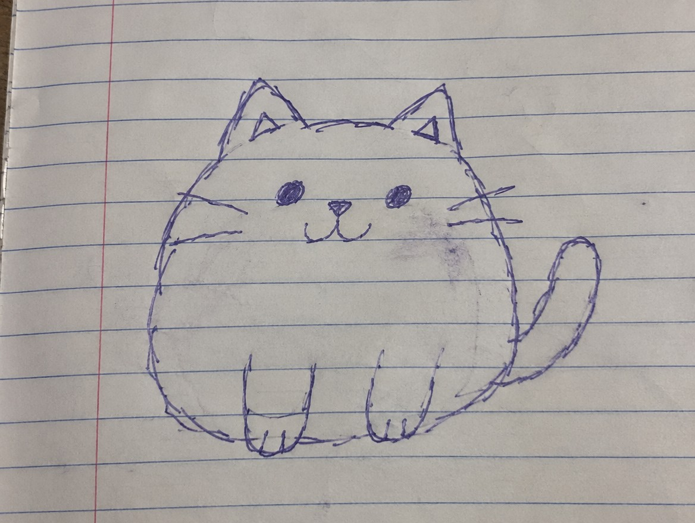
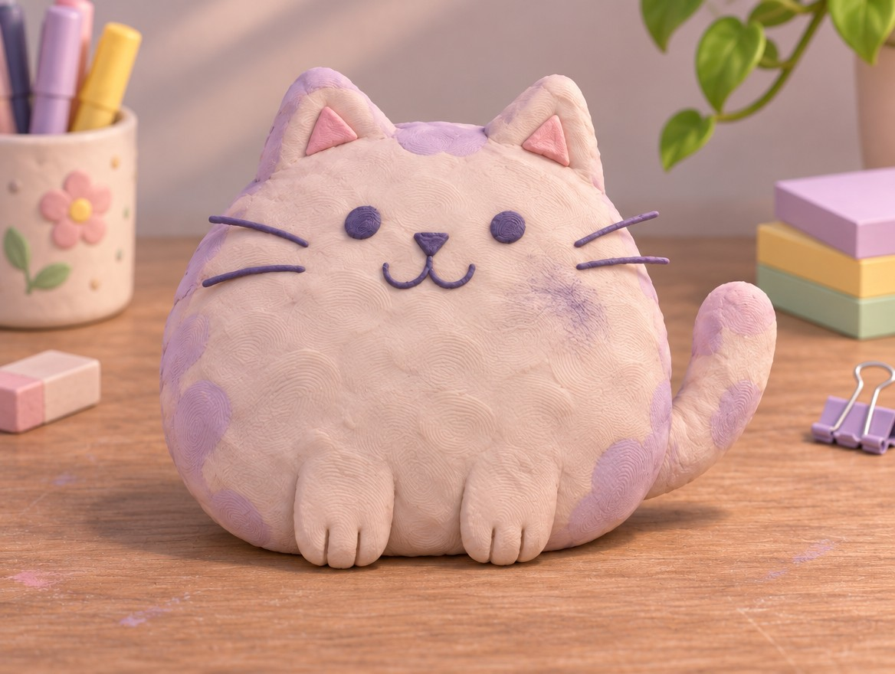
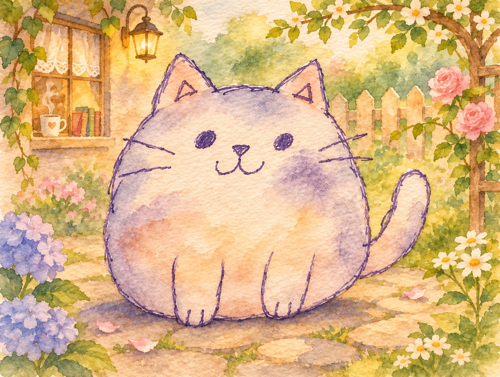
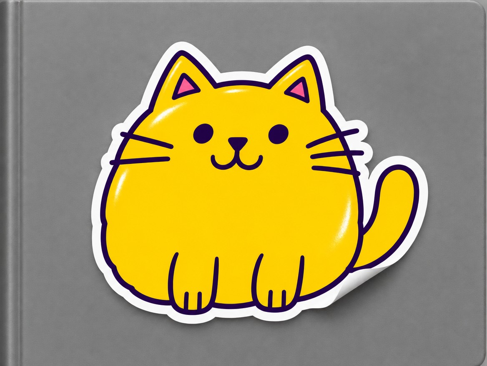
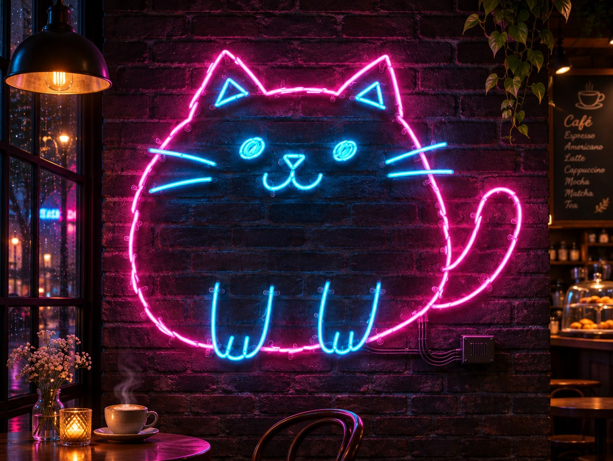
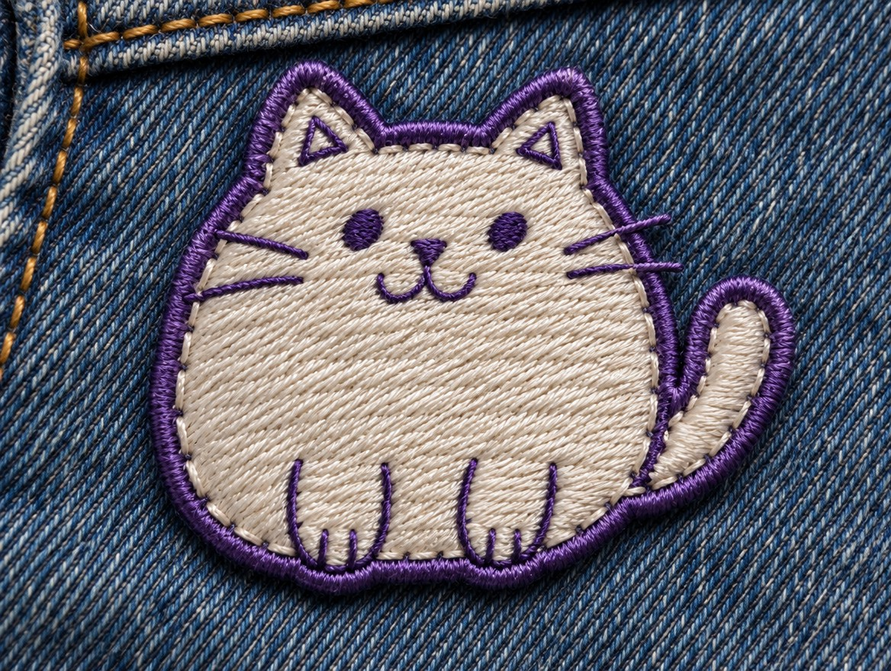

AI 문방구 · 낙서 변신 5
대충 그린 낙서
→ 5가지 변신
댓글로 신청해주셔서 고마워요. 영상 속 사진은 전부 힉스필드(GPT Image 2.6)에 공책 낙서 사진 한 장을 넣고 문장만 바꿔 만든 결과예요. 아이 그림이나 가게 캐릭터 낙서로 해보세요.
BASE원본 낙서 (전)

01clay figure
말랑한 3D 장난감
점토로 빚은 피규어처럼 바뀌어요. 아이 그림으로 하면 반응이 제일 좋아요.
전

후Turn this exact doodle into a cute handmade clay figure toy with the same shape and pose, soft matte plasticine texture, pastel colors, soft studio light
02watercolor picture book
동화책 한 장면
번지는 수채 물감과 배경이 같이 그려져요.
전

후Turn this exact doodle into a watercolor children's picture book illustration with the same shape and pose, soft bleeding washes, cozy background, paper texture
03vinyl sticker
바로 쓰는 굿즈
흰 테두리 다이컷 스티커가 돼요. 그대로 인쇄소에 맡겨도 돼요.
전

후Turn this exact doodle into a glossy die-cut vinyl sticker with the same shape and pose, bold clean outlines, flat bright colors, thick white border, no logos
04neon sign
벽에 걸린 간판
가게 간판 시안으로 미리 보기 좋아요.
전

후Turn this exact doodle into a glowing neon sign with the same outline, mounted on a dark brick wall at night, realistic neon tubes and glow
05embroidered patch
한 땀씩 자수 패치
실 질감이 살아 있는 와펜이 돼요.
전

후Turn this exact doodle into an embroidered patch with the same shape and pose, visible thread stitches, satin stitch fill, merrowed border, on denim
HOW내 그림으로 하는 법
그림을 위에서 반듯하게 찍어 올리고 아래 문장의 [ ]만 바꾸면 돼요. "this exact doodle"과 "same shape and pose"를 넣어야 내 그림 모양이 그대로 남아요.
Turn this exact doodle into [원하는 스타일] with the same shape and pose